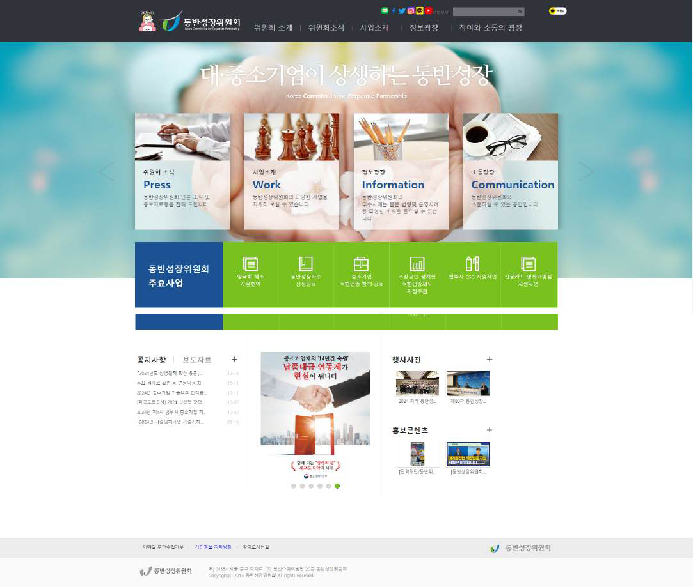
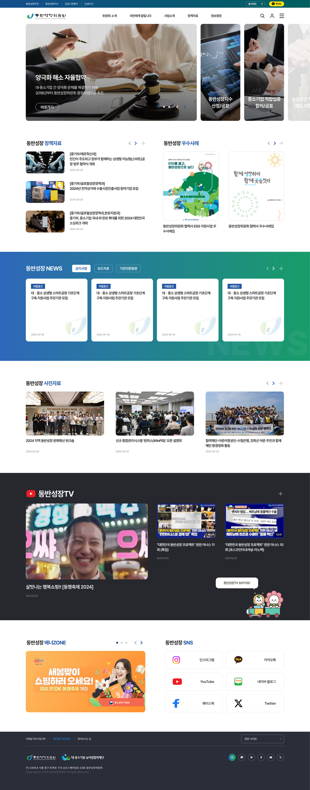
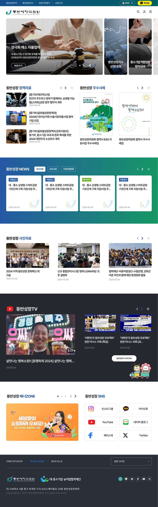
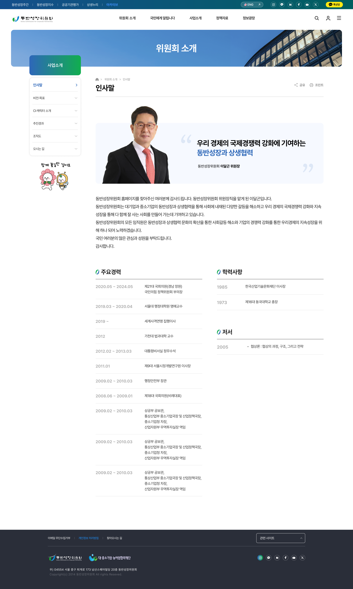
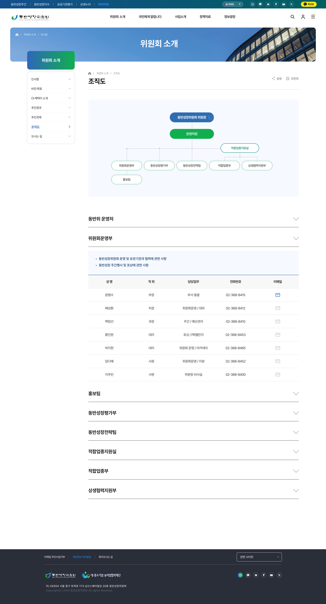
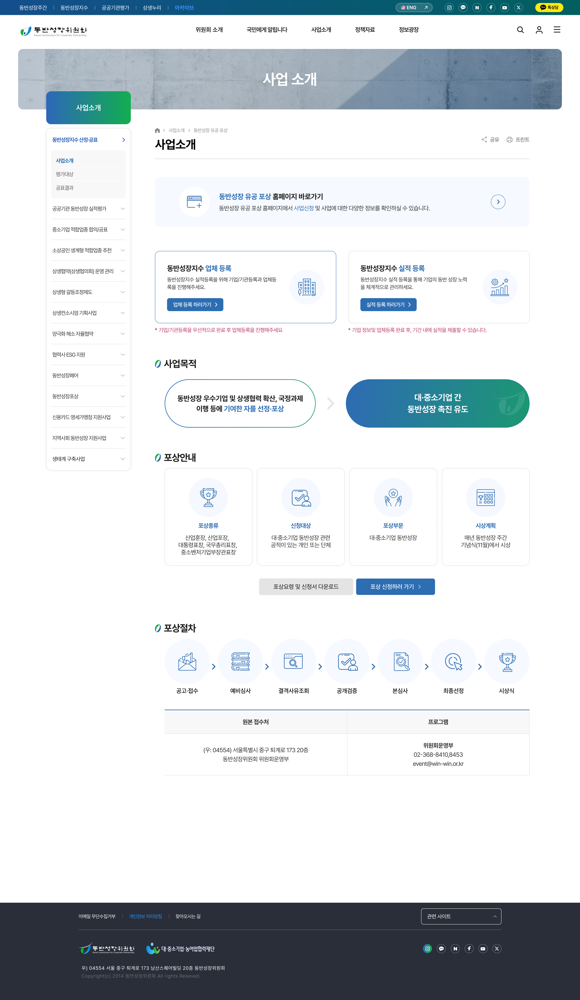
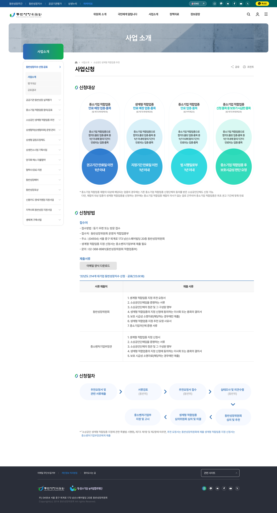
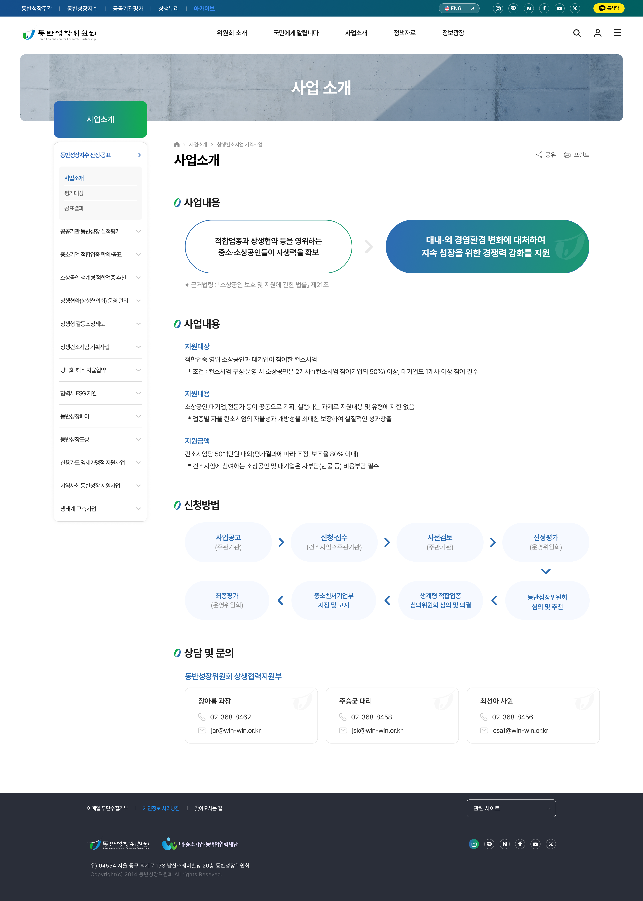
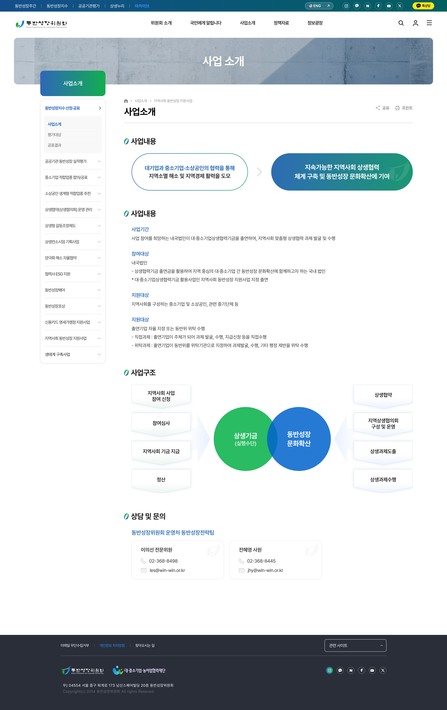

동반성장 뉴스 — 로고 포인트로
개별 뉴스 콘텐츠에 썸네일 이미지가 없는 상황. 동반성장위 로고를 카드 안 시각 포인트로 활용해 그리드가 비어 보이지 않게 풀었습니다.
기존 정부 사이트를 반응형으로 전면 리뉴얼한 공공기관 프로젝트.
기존 동반성장위원회 사이트를 반응형으로 리뉴얼한 프로젝트. 공공기관 홈페이지의 디자인 한계를 업그레이드하면서, PC·모바일 동일 레이아웃과 좌측 고정 네비게이션 최적화로 운영 단계까지 일관성을 유지하도록 설계했습니다.
2013년 오픈된 1150px 고정 그리드의 옛 사이트를, 2024년 기준 1600px 반응형 그리드로 전면 리뉴얼했습니다. 정보구조 · 콘텐츠 위계 · 디바이스 대응을 처음부터 다시 정의했습니다.


공공기관 담당자가 많은 사이트 특성상 자료 정리가 어려운 상태에서, 기존 홈페이지의 자료를 그대로 살리면서 디자인을 업그레이드해야 했습니다. 폰트와 화면은 크게, 뉴스·보도자료는 강조하고, 서브페이지에는 좌측 사이드 메뉴를 필수로 두는 — 고객사 요구를 그대로 반영하며 UI/UX 원칙으로 최적화한 작업입니다.
공공기관 담당자가 많아 기존 자료를 그대로 업그레이드해야 함
폰트와 화면을 크게 — 정보 가독성 우선 요구
메인의 뉴스·보도자료 섹션을 위치 재배치 + 배경 강조
서브페이지 좌측 고정 네비게이션 — 고객사 필수 요구
1600px 메인 캔버스를 기준으로 Tablet · Mobile까지 동일한 위계로 재구성. 어떤 디바이스로 들어와도 같은 정보 구조를 그대로 가져갈 수 있도록 설계했습니다.








개별 뉴스 콘텐츠에 썸네일 이미지가 없는 상황. 동반성장위 로고를 카드 안 시각 포인트로 활용해 그리드가 비어 보이지 않게 풀었습니다.
프로젝트 자체 이미지 자료가 부족한 환경에서, 동반성장 우수사례 자료의 표지 디자인을 시각 포인트로 끌어와 콘텐츠 그리드를 자연스럽게 채웠습니다.
퍼블리싱 단계에서 고객사가 자체 제작 캐릭터 사용을 요구. 컬러·여백·위계 등 기존 디자인 시스템이 틀어지지 않도록 위치·크기를 조정해 자연스럽게 통합했습니다.
프라이머리 컬러는 #2D6DB2 → #11AE4F 그라데이션. 공공기관 톤의 블루에서 그린으로 자연스럽게 흐르는 메인 컬러를 중심으로, 본문 16px · 1600px 캔버스의 모던한 가독성을 더했습니다.
Pretendard · Bold · Semi-bold · Regular